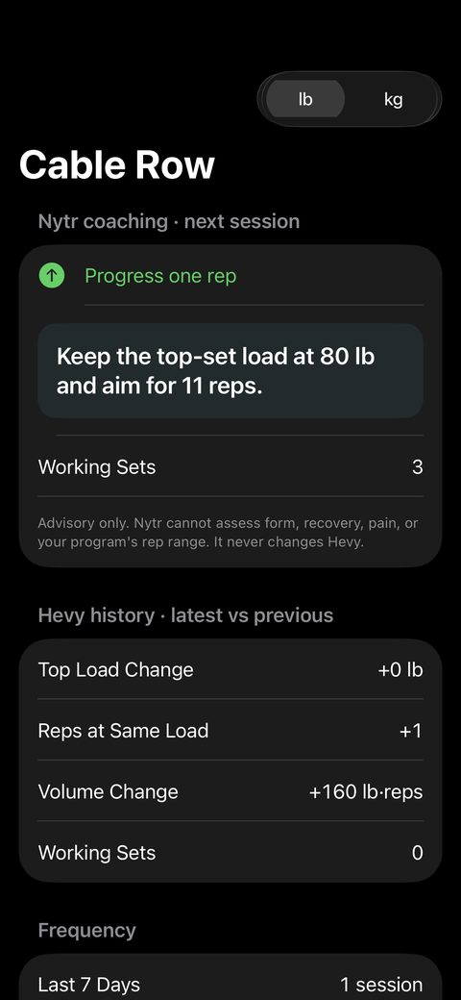
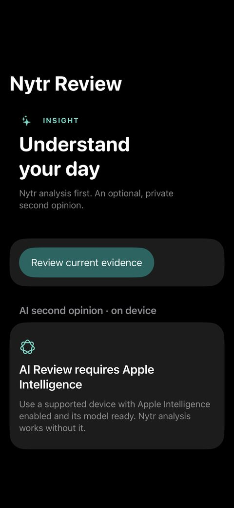

Nytr
Campus dining changes every day. My nutrition targets do not. Nytr takes what the dining hall serves today, my food log, HealthKit body data, and my training history, and computes what to eat next. A language model never makes the decision.
Backend. 1,124 pass in CI with Postgres; 11 need private fixtures.
iOS cases, run in Xcode. Not in CI yet.
No floats in nutrition, target, or trend math. Records are append-only.
Demo
1:08 demo. Below: three screens. All screenshots use synthetic data.



The problem
Most nutrition apps ask you to search a generic food database and guess what you ate. My problem was different: my campus dining hall (Stacks Market at Penn State Harrisburg) serves a different menu every day, and I wanted to know what to eat next from that menu to stay on my calorie and protein targets.
To answer that well, the system must know things a simple tracker ignores. Is this item's nutrition published or estimated? Is the last weight reading recent enough to trust? Did I actually eat the meal it recommended? If the app guesses silently, the advice is wrong.
What I built
DATA Stacks menus · HealthKit · Hevy · Open Food Facts · my own input
│
▼
CALCULATION typed Python domain · exact Decimal math · versioned policies
│
▼
DECISION a recommendation I can accept, edit, or reject
│
▼
EXPLANATION optional on-device model: reads results, never changes them- Backend: a FastAPI modular monolith on PostgreSQL (Supabase) with row-level security. A typed domain layer owns all arithmetic and does not depend on FastAPI, the database driver, or any provider SDK.
- Ingestion: a fail-closed adapter for the dining menu, HealthKit sync from the iOS app, Hevy training import, and barcode lookup through Open Food Facts. Every value keeps its source, fetch time, and payload digest.
- Planning: a deterministic Next Meal planner that uses the remaining calories, protein, and meal times in the day; progressive-overload coaching from training history.
- iOS app: SwiftUI, HealthKit, Swift Charts, VisionKit barcode scanning. No third-party Swift packages.
The hard part: sync that survives crashes and deletions
HealthKit data arrives from a phone that can lose its connection or be killed at any moment. Two rules keep the backend correct:
- Two anchors. The app uses an in-memory query anchor while it reads HealthKit. It saves the durable anchor only after the backend confirms the database commit. If the app crashes mid-batch, it sends the batch again, and idempotent writes make the replay safe.
- Tombstones. A sample deleted in Apple Health becomes a tombstone row (
tombstoned_at). If an older “add” for that sample arrives late, the backend drops it, so deleted data does not come back.
A related rule runs through the whole domain: missing data is not zero. An unknown nutrient stays unknown and the day is marked as partial evidence.
Key decision: the model explains, it does not decide
I did not let a language model produce any number. Meal scoring, dietary filters, targets, and trends are plain Python over versioned data, with Decimal arithmetic stored in PostgreSQL numeric columns. An optional Apple Foundation Models feature runs on the device and explains results that already exist. Remove it and every number stays the same.
Targets follow the same rule. A 28-day Theil–Sen body-mass trend can propose a 100 kcal change, but nothing changes until I approve it in the app. Approval writes a new target version with a reason. Old plans keep the versions they were built from, so history is reproducible. Workouts give timing context only; they never add calories back to the target.
Evidence
- 1,135 backend tests. 1,124 pass in CI against Postgres; 11 skip because they need private dining fixtures that the public repository does not ship.
- 251 iOS XCTest cases, including render and appearance regression tests. They run in Xcode; they are not in CI yet.
- Strict
mypyand Ruff on the backend in the same CI job. - Behavior changes are versioned (for example
next-meal.remaining-opportunities.v2), so old records stay explainable. - I use Nytr with my own data. The public repository contains only synthetic fixtures.
Limitations
- It supports one dining location (Stacks Market). Other Penn State locations are the next step.
- iOS tests are not part of CI yet.
- The app is not on the App Store, and there is no Android client.
- The on-device explanation needs an iPhone that supports Apple Intelligence.
The README has the architecture notes, the nutrition engine, the dining integration boundary, and setup steps.
Read the Nytr README